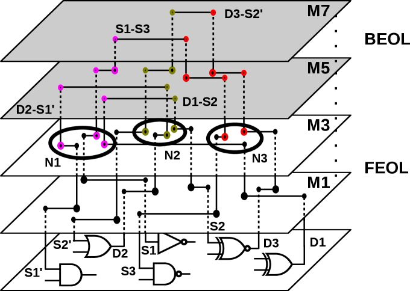
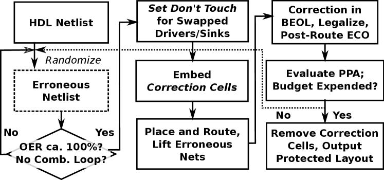
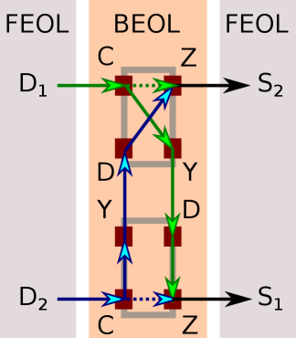
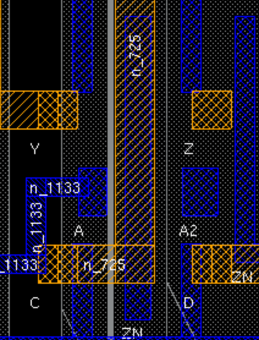
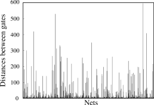
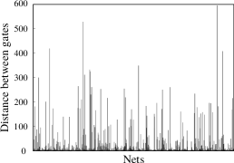
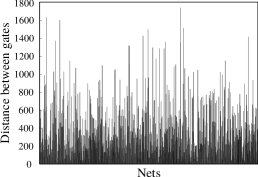
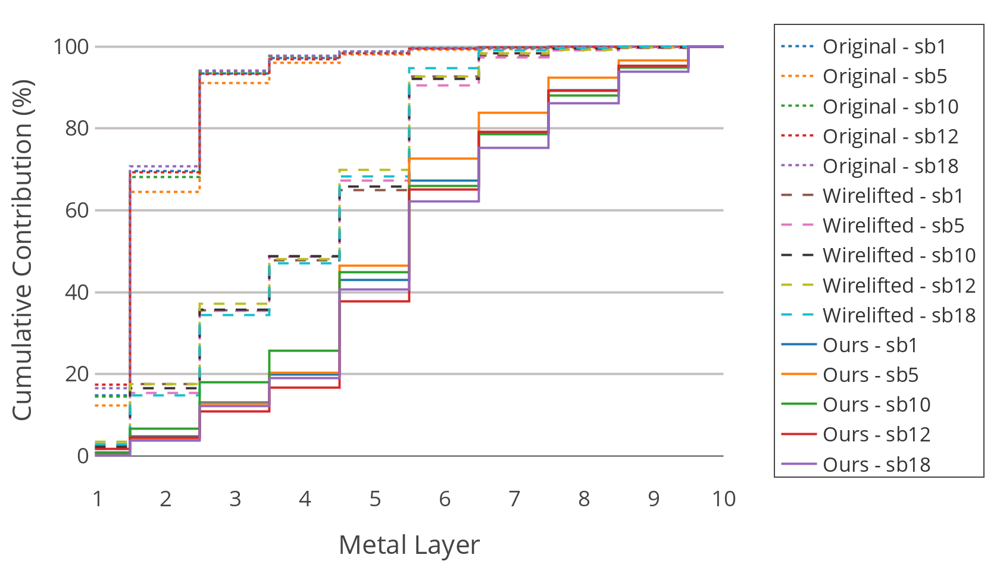
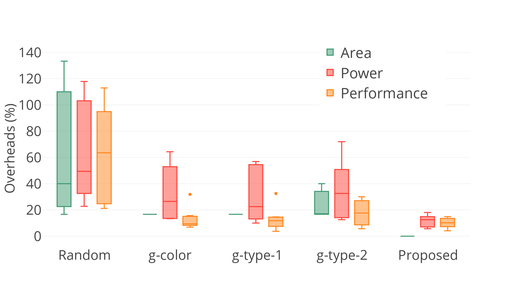

ارفع مستوى التصنيع المجزأ:
استعادة الوظيفة الحقيقية عبر BEOL
الملخص
يسعى التصنيع المجزأ (SM) إلى الحماية من قرصنة الملكية الفكرية (IP) في تصاميم الشرائح. ونقترح هنا مخططاً للتلاعب بكل من التموضع والتوجيه على نحو متشابك، مما يزيد متانة تخطيطات SM. وتتمثل المراحل الرئيسة لمخططنا في عشوأة التصميم (جزئياً)، ووضع وتوجيه قائمة التوصيلات الخاطئة، واستعادة التصميم الأصلي بإعادة توجيه BEOL. واستناداً إلى أحدث هجمات القرب، نبرهن أن مخططنا يتفوق بوضوح على الأعمال السابقة (أي بمعدلات وصل صحيحة مقدارها 0%). ويُحدث مخططنا زيادات PPA قابلة للتحكم ويخفض الكلفة التجارية (ويتحقق الأخير بالتقسيم عند طبقات أعلى).
1. المقدمة
طُرح 2011 من قبل وكالة IARPA، ويسعى التصنيع المجزأ (SM) إلى حماية شركات تصميم الشرائح من قرصنة ملكيتها الفكرية (IP) على يد مرافق تصنيع خارجية (mccants11, ). ويمكن أن يساعد SM أيضاً في التخفيف من تهديدات مرتبطة، مثل إدخال أحصنة طروادة العتادية أو فرط التصنيع غير المصرح به (HW_Obfuscation-FBT17, ).
في نموذج التهديد الأكثر شيوعاً (rajendran13_split, ; hill13, ; wang16_sm, ; magana16, ; magana17, ; sengupta17_SM_ICCAD, ; feng17, )، يتولى مصنع تصنيع خارجي متقدم التعامل مع الجزء الأمامي من خط التصنيع (FEOL)، ويُعد منافساً لكنه غير موثوق به، في حين يُصنَّع الجزء الخلفي من خط التصنيع (BEOL) لاحقاً (فوق FEOL) في مرفق تكامل موثوق. إضافة إلى ذلك، تناول Wang et al. (wang17_FEOL, ) نموذج تهديد آخر تكون فيه منشأة BEOL غير موثوقة؛ وفيه يسعى الخصوم إلى استنتاج البوابات من كامل مكدس BEOL (أي إن جميع الأسلاك/الفتحات متاحة، باستثناء التوصيل داخل الخلية في M1).
تستند وعود SM الأمنية إلى افتراضين: () أن مصنّعي الطرف الثالث لا يملكون وصولاً إلى التصميم الكامل، بل إلى FEOL أو BEOL فقط، و() أن هذه الأطراف الثالثة لا تتواطأ. وبالنسبة إلى نموذج التهديد التقليدي (مصنع FEOL غير الموثوق)، يوجد خطر إضافي: إذ يستطيع الخصوم في المصنع استغلال تفاصيل التنفيذ الفيزيائي لتخطيط FEOL. وبصورة أكثر تحديداً، لأن أدوات أتمتة التصميم تُحسّن القدرة والأداء والمساحة (PPA)، فإن جزء FEOL نفسه يحتوي على دلائل متنوعة حول وصلات BEOL البينية المفقودة. والأهم أن البوابات المراد وصلها توضع عادةً قريبةً بعضها من بعض. وتستغل هجمات القرب المختلفة (rajendran13_split, ; wang16_sm, ; magana16, ; magana17, ; feng17, ) هذا الدليل المتعلق بالقرب (إلى جانب دلائل أخرى مثل قيود التأخير أو مسارات التوجيه)، مما يثير مخاوف بشأن الوعد الأمني الذي يقدمه SM.
في هذا العمل، نرفع «مستوى اللعبة» في SM للحماية من خصوم مصانع التصنيع الخبيثة. وتتمثل الفكرة الأساسية في التلاعب بكل من التموضع والتوجيه بطريقة متشابكة وشمولية ومضللة، بما يزيد متانة تخطيطات FEOL. وبصورة أكثر تحديداً، نعشوئ التصميم على مستوى قائمة التوصيلات، ثم نضع ونوجّه قائمة التوصيلات الخاطئة الناتجة، ونستعيد الوظيفة الحقيقية في BEOL فقط. ويمكن تلخيص هذه الورقة كما يأتي:
- •
-
•
نقترح وننفذ (في Cadence Innovus) مخطط حماية لـ SM (القسم 4). ويستند مخططنا إلى إرباك شامل للتموضع والتوجيه في FEOL، ثم تصحيح لاحق في BEOL. ويتيح المخطط أثراً قابلاً للتحكم في PPA. علاوة على ذلك، يمكننا الحد من الكلفة التجارية لـ SM، عن طريق التقسيم بعد طبقات أعلى (مثلاً، بعد M6).
-
•
نصمم خلايا تصحيح مخصصة لمخططنا. وتتيح لنا هذه الخلايا التعامل مع التفافات الأسلاك بطريقة محكومة جيداً، وهو أمر أساسي من أجل () إحداث تموضع وتوجيه مضللين في FEOL و() استعادة الوظيفة الحقيقية لاحقاً بإعادة التوجيه في BEOL.
-
•
نقيّم مخططنا من حيث كلفة PPA والأمن (القسم 5). وننظر في معايير قياس مختلفة، بما في ذلك معايير القياس الصناعية IBM superblue. ونقارن بدقة مع الأعمال السابقة. كما نجعل تخطيطاتنا المحمية الخالية من مخالفات DRC ونصوص SM البرمجية متاحة للمجتمع، إلى جانب تعريفات المكتبة الخاصة بخلايا التصحيح (webinterface, ).
2. الخلفية والدافع
اقترح Wang et al. (wang16_sm, ) هجوماً متقدماً قائماً على القرب يستخدم دلائل متعددة من تخطيطات FEOL: () القرب الفيزيائي بين البوابات، () تجنب الحلقات التوافقية، () القيود على سعات الحمل، () اتجاه «الأسلاك المتدلية»11 1 توجد مقاطع معدنية تُترك مفتوحة/غير موصولة في أعلى طبقة FEOL، وتحديداً حيث يُفترض وضع الفتحات التي تتصل صعوداً بـ BEOL. ويُشار إلى هذه المقاطع المعدنية باسم «الأسلاك المتدلية». كذلك نشير إلى مواضع تلك الفتحات المتصلة بـ BEOL باسم الدبابيس الافتراضية (vpins)، كما في (magana16, ; magana17, ).، و() قيود التوقيت. واقترح Magaña et al. (magana16, ; magana17, ) مخططات هجوم مختلفة، ثم لاحظوا تجريبياً أن الهجمات التي تراعي مسارات/استغلال التوجيه أكثر فاعلية من الهجمات المتمحورة حول التموضع. كما لاحظوا أن مجموعة IBM superblue أصعب بكثير على الهجوم من معايير القياس «التقليدية» صغيرة النطاق. وتجدر الإشارة إلى أن هجماتهم لا تستعيد قوائم التوصيلات الفعلية، بل تسرد فقط مرشحين محتملين لكل شبكة لإعادة وصلها.
تتمثل مقاييس الهجوم الرئيسة، كما نوقشت في (rajendran13_split, ; wang16_sm, ; wang17, )، في مسافة هامنغ (HD)، ومعدل الوصل الصحيح (CCR)، ومعدل أخطاء الخرج (OER). تقيس HD عدم التطابق بين مخرجات قائمة توصيلات أصلية ومخرجات قائمة توصيلات مستعادة/مسروقة أثناء التحفيز الاختباري. وتدل HD مقدارها 0% (أو 100%) على نجاح الهجوم. أما CCR فهو نسبة الشبكات المستعادة بنجاح إلى جميع الشبكات المحمية. ومن ثم، كلما ارتفع CCR كان الهجوم أكثر فاعلية. ويعكس OER احتمال أن تكون بعض بتات الخرج غير صحيحة عند تحفيز قائمة التوصيلات المستعادة/المسروقة بأنماط اختبارية. وتقيس المقاييس المتمحورة حول التوجيه المقترحة في (magana16, ; magana17, ) فضاء حلول SM. فـ عدد الدبابيس الافتراضية يحصي إجمالي الفتحات/الدبابيس في أعلى طبقة FEOL (المطلوب إعادة وصلها)؛ وحجم قائمة المرشحين هو متوسط عدد الشبكات التي ينبغي النظر فيها لكل دبوس افتراضي؛ أما المطابقة ضمن القائمة فيبين عدد الدبابيس الافتراضية التي تكون الشبكة الصحيحة فيها بين عناصر قائمة المرشحين.22 2 انظر المثال الآتي، حيث يلاحظ المهاجم 1,000 دبوساً افتراضياً. ووفقاً لـ (magana16, )، لنفترض أيضاً أن الشبكات ذات الدبوسين فقط متاحة في التصميم، أي إن 500 شبكة ذات دبوسين يلزم إعادة وصلها. إن حجم فضاء الحلول الذي يغطي جميع قوائم التوصيلات الممكنة هو عدد المطابقات التامة في رسم بياني ثنائي كامل (يمثل 500 مشغلاً و500 مصباً)، وهو ببساطة . وبعد إجراء الهجمات المتمحورة حول التوجيه، وبافتراض أفضل مطابقة ضمن القائمة ممكنة (أي 100%) وحجم قائمة مرشحين مقداره 1.4 في المتوسط، لا يبقى سوى قائمة توصيلات ممكنة على الأكثر. (وهذا العدد يقترب مصادفةً من العدد المقدر للذرات في الكون.) ومن المهم ملاحظة أنه لأي مطابقة ضمن القائمة دون 100%، لا تكون قائمة التوصيلات الحقيقية مشمولة حتى ضمن ذلك العدد الهائل. ومن ثم، فمع أن الهجمات ذات الصلة تساعد على حصر فضاء حلول SM بعناية، فلا يمكن النظر إليها إلا بوصفها مرحلة مكملة لهجمات أخرى.
تقترح الأعمال السابقة (rajendran13_split, ; wang16_sm, ; sengupta17_SM_ICCAD, ; wang17, ; magana16, ; magana17, ; feng17, ; wang17_FEOL, ) تدابير مختلفة لجعل تخطيطات FEOL متينة في مواجهة هجمات القرب. فعلى سبيل المثال، يربك Wang et al. (wang16_sm, ) وكذلك Sengupta et al. (sengupta17_SM_ICCAD, ) تموضع البوابات. إلا أنه تبيّن في (wang16_sm, ; sengupta17_SM_ICCAD, ) أن التقسيم بعد طبقات أعلى—وهو أمر أساسي للحد من الكلفة التجارية لـ SM (xiao15, )—يمكن أن يقوّض الحماية. ومن اللافت أن هذا يظل صحيحاً إلى حد ما حتى عند تطبيق عشوأة التخطيط (sengupta17_SM_ICCAD, ). ويرجع هذا القيد في المخططات المتمحورة حول التموضع إلى أن أي إرباك في التموضع تُسوّيه عملية التوجيه في نهاية المطاف.
أما مخططات الحماية المتمحورة حول التوجيه، مثل تلك الواردة في (rajendran13_split, ; wang17, ; magana16, ; feng17, ; magana17, )، فتعالج التخطيطات الأصلية عادةً معالجة لاحقة، ومن ثم تخضع لقيود موارد التوجيه وميزانيات PPA. لذلك، قد تقتصر هذه المخططات على التفافات توصيلية قليلة نسبياً و/أو قصيرة، وهو ما قد يسهل مهاجمته. فعلى سبيل المثال، يقترح Rajendran et al. (rajendran13_split, ) تبديل دبابيس وحدات IP وإعادة توجيهها لتضليل المهاجم. ولأن الإرباكات ذات الصلة لا تغطي إلا التوصيلات البينية على مستوى النظام، فإن هذا المخطط () لا يستطيع الحماية من قرصنة IP على مستوى البوابات و() يفرض فضاء حلول صغيراً نسبياً على المهاجم. وكما ورد في (rajendran13_split, ) نفسها، يمكن في المتوسط استعادة 87% من الوصلات. إضافة إلى ذلك، يتطلب فرض التفافات التوجيه في BEOL تخصيص تدفق التصميم، وهو ما قد يكون تحدياً بحد ذاته. فعلى سبيل المثال، لا تسمح المخططات في (magana16, ; magana17, ) إلا بالتفافات ضمنية، أي بإدراج عوائق توجيه.
3. مفهومنا (تحت الهجوم)
على خلاف معظم الأعمال السابقة التي تتلاعب بالتموضع و/أو التوجيه على مستوى التخطيط وبأسلوب معالجة لاحقة، يستهدف مفهومنا قائمة التوصيلات نفسها—وتحديداً من خلال عشوئتها جزئياً. ويساعدنا ذلك على الإبقاء على التعديلات المضللة عبر أي تدفق تصميم اعتيادي، ومن ثم الحصول على تخطيطات FEOL أكثر متانة. ولا تُصحح هذه التخطيطات إلا في BEOL (الشكل 1). بعد ذلك، نوضح كيف يضلل مفهومنا مخططات الهجوم الحديثة. ونؤكد حدسنا في القسم 5.2، حيث نعرض قيماً متفوقة للمقاييس الأمنية الرئيسة.

أي هجوم—حتى مع افتراض معدلات استعادة مثالية—سيكون ملزماً بملاحظة مسارات المنطق والتوقيت في قائمة التوصيلات الخاطئة. وبالنسبة إلى الهجوم الذي اقترحه Wang et al. (wang16_sm, )، فإن القرب الفيزيائي بين البوابات، وقيود الحمل والتوقيت، وكذلك اتجاه الأسلاك المتدلية، كلها تلتقط قائمة التوصيلات الخاطئة، لا الأصلية. فعلى سبيل المثال، يشير مخزن كبير مثل BUFX8 عادةً أن مصبه/مصباته بعيدة نسبياً. أما في قائمة التوصيلات الأصلية، فقد يقود هذا المخزن في الواقع مصباً/مصبات قريبة. وبالنسبة إلى الهجوم المتمحور حول التوجيه في (magana16, )، نلاحظ أن عشوأة قائمة التوصيلات تساعد على توسيع فضاء الحلول بدرجة كبيرة عند مقارنتها بالتخطيطات الأصلية (وحتى عند مقارنتها بـ الرفع الساذج، القسم 5.2). وسيعيق ذلك بطبيعة الحال أي هجمات لاحقة (وهي، مرة أخرى، لم تُبرهن بعد).
سنفترض أن المهاجم يعرف مبدأ مخطط الحماية لدينا؛ ومن ثم فإنه يتوقع تخطيطات FEOL مضللة. غير أن المهاجم الساذج، من دون كشف BEOL له، لا يستطيع على الأرجح إلا اللجوء إلى القوة الغاشمة، أي تعداد جميع قوائم التوصيلات الممكنة، وهو أمر غير عملي حسابياً (القسم 2). وقد يسعى مهاجم أكثر تطوراً إلى استبعاد مسارات المنطق والتوقيت «غير المعقولة» الناشئة عن العشوأة. لكن القيام بذلك يخضع لـ () خبرة كبيرة في تصميم التخطيطات، و() حجم قائمة التوصيلات الأصلية ونطاقها (غير المعروف بعد)، و() «درجة عدم المعقولية» في المسارات، وهي درجة عشوائية. ونعتقد أن مثل هذه الهجمات تمثل تحدياً مفتوحاً ومثيراً للاهتمام.
4. المنهجية
تُنفذ منهجيتنا بوصفها امتداداً لـ Cadence Innovus باستخدام نصوص برمجية داخلية مخصصة وتخصيص للمكتبة. ويمكن تلخيص الخطوات كما يأتي: نقوم بـ () عشوأة قائمة التوصيلات، و() وضع وتوجيه قائمة التوصيلات الخاطئة والمضللة، و() استعادة الوظيفة الحقيقية بإعادة التوجيه في BEOL (الشكل 2).
فيما يأتي نقدم بعض التفاصيل. بالنسبة إلى ()، نعشوئ قائمة التوصيلات تكرارياً بتبديل الاتصال بين أزواج مختارة عشوائياً من المشغلات ومصباتها.33 3 في حال فرضت قائمة التوصيلات بعض قيود المحاذاة، مثلاً لمسارات البيانات، فيجب استبعاد البوابات ذات الصلة من العشوأة. وأثناء ذلك، نضمن عدم نشوء حلقات توافقية في قائمة التوصيلات المعدلة نتيجة أي من التبديلات العشوائية—إذ إن الحلقات قد تساعد المهاجم على تحديد هذه التعديلات (wang16_sm, ). وننفذ التبديل إلى أن يقترب OER من 100%، مما يعني أن قائمة التوصيلات المعدلة ستُحدث بعض الأخطاء لأي دخل. كما نتتبع الاتصال الأصلي والمشغلات/المصبات التي تم تبديلها. وبالنسبة إلى ()، تُحمّل قائمة التوصيلات المعشوأة في Cadence Innovus. في البداية، تُوسم المشغلات/المصبات المبدلة بأنها do not touch لتجنب إعادة هيكلة المنطق أو إزالة الشبكات ذات الصلة. ثم توضع قائمة التوصيلات وتُحسّن للتوقيت والقدرة والازدحام. وقبل التوجيه، تُحضّر الشبكات التي تصل المشغلات/المصبات المبدلة للرفع إلى M6 (أو M8) بمساعدة خلايا تصحيح مخصصة. وتجدر الإشارة إلى أن خلايا التصحيح هذه لا تؤثر في تخطيط FEOL؛ إذ يقتصر نطاقها على رفع الشبكات وتصحيحها في BEOL (انظر أيضاً أدناه). بعد ذلك، يوضع التصميم ويوجه مرة أخرى في نمط ECO لتنفيذ رفع الشبكات المبدلة. وبالنسبة إلى ()، تُستعاد الاتصالية الحقيقية في BEOL بمساعدة خلايا التصحيح والاتصالية الأصلية المتتبعة. ويعاد توجيه التصميم ويمر عبر تحسين postRoute لتحسين التوقيت وحل مشكلات DRC. وفي حال لم تُستنفد ميزانية PPA بعد، نكرر الخطوات لإدخال مزيد من العشوأة. وإلا فإننا نزيل خلايا التصحيح، ونصدّر ملفات DEF/Verilog لمزيد من تحليل التخطيط/الأمن.

فيما يأتي تُعرض النقاط الرئيسة للتصميم الفيزيائي لـ خلايا التصحيح. نقدم تنفيذ خلايانا فوق مكتبة Nangate 45nm في (webinterface, ). ويوضح الشكل 3 خلايانا.
تُنمذج خلايا التصحيح بوصفها بوابات OR ذات 2 دخل و2 خرج؛ وC وD هما دبابيس دخل، أما Y وZ فهما دبابيس خرج.
توجد أربعة أقواس ممكنة (من C إلى Y، ومن C إلى Z، ومن D إلى Y، ومن D إلى Z). ويُستخدم القوس من C إلى Z لتنفيذ قائمة التوصيلات الخاطئة أثناء الوضع والتوجيه الأوليين. وعند استعادة الوظيفة الحقيقية، تُعطّل القوسان من C إلى Z ومن D إلى Y (set_disable_timing) بحيث لا تُراعى إلا المسارات الحقيقية من أجل تحسين وتقييم صحيحين للتوقيت والقدرة.
تُعد جميع الدبابيس في طبقة معدنية أعلى (هنا M6 أو M8) لتمكين رفع الأسلاك وتوجيهها في BEOL. وتُختار أبعاد الدبابيس وإزاحاتها بحيث يمكن وضعها على مسارات الطبقات المعدنية المعنية—ويساعد ذلك على تقليل ازدحام التوجيه.
يمكن لخلايا التصحيح أن تتراكب بحرية مع الخلايا القياسية. ويرجع ذلك إلى أن الخلايا القياسية تملك دبابيسها حصراً في طبقات معدنية أدنى، في حين لا تؤثر خلايا التصحيح لا في تلك الطبقات ولا في طبقة الأجهزة. وننفذ وفقاً لذلك نصوص تقنين مخصصة. وتمنع هذه النصوص أيضاً خلايا التصحيح المختلفة من التراكب بعضها مع بعض.
تُستعمل خلية المخزن BUFX2 لخصائص القدرة والتوقيت الخاصة بخلايا التصحيح. ويمكننا الامتناع عن التوصيف التفصيلي للمكتبة لأن خلايا التصحيح لا تنفذ سوى بعض أسلاك BEOL.
لتمكين تحسين ECO بصورة سليمة، تُعد خلايا التصحيح لوسم الأحمال في وقت التصميم. وهذا مطلوب لالتقاط الأحمال السعوية لـ () الأسلاك الممتدة من خلايا التصحيح إلى المصبات و() المصبات نفسها.


من المهم ملاحظة أن إعادة التوجيه (لاستعادة قائمة التوصيلات الأصلية) تتم دائماً بين أزواج من خلايا التصحيح، لا داخل خلية واحدة فقط. وهذا يعني أن المهاجم قد يعرف مخطط خلايا التصحيح (أي إن المسارات الحقيقية تقع بين C وY وبين D وZ)، لكنه لا يستطيع اشتقاق قائمة التوصيلات الأصلية من تلك المعرفة وحدها. وبدلاً من ذلك، عليه تحديد الأزواج الصحيحة من الخلايا، وهو ما تعيقه حقيقتان: () أن تتبع خلايا التصحيح المتمحورة حول BEOL في FEOL أمر صعب، وحتى عندما ينجح المهاجم، فإن () المسافات بين أزواج الخلايا الصحيحة تكون معشوأة، استناداً إلى قائمة التوصيلات الخاطئة التي وُضعت ووُجهت. بالنسبة إلى ()، تذكر أن ذلك يضلل أي هجوم قرب من أحدث الهجمات منذ البداية (القسم 3). وبالنسبة إلى ()، لاحظ أن دبابيس خلايا التصحيح تقع في طبقات أعلى (M6 أو M8)، في حين يُقسم التخطيط بعد طبقات أدنى، مما يستلزم وجود بعض مسارات التوصيل بينها. ومن ثم، فمن غير المرجح أن تكون الأسلاك المتدلية المرتبطة بخلايا التصحيح مميزة كما في الشكل 3(b)، بل إنها تكون موزعة.
5. النتائج
5.1. الإعداد التجريبي
حالات الاختبار: نقيّم الدفاع المقترح لدينا على 12 معيار قياس، سبعة من مجموعة ISCAS-85 وخمسة من مجموعة IBM superblue الصناعية (viswanathan11, ). ونحوّل معايير superblue (المعرّفة في الأصل بصيغة Bookshelf) إلى ملفات Verilog باستخدام نصوص من (kahng14, ).
إعداد تقييم التخطيط: تُنفذ تقنياتنا في Cadence Innovus 16.15 باستخدام نصوص TCL داخلية مخصصة، وتفرض زيادات زمن تشغيل ضئيلة. ونستفيد من Nangate 45nm Open Cell Library (nangate11, ) ذات عشر طبقات معدنية. تُعد خلايا التصحيح في M6 لمعايير ISCAS-85 وفي M8 لمعايير superblue. ويُجرى تحليل PPA محافظ لزاوية العملية البطيئة وجهد تغذية قدره 0.95V. ونضمن خلو جميع التخطيطات من الازدحام باختيار معدلات استغلال مناسبة. ونسمح بميزانيات PPA مقدارها 20% لمعايير ISCAS-85 و5% لمعايير superblue.
إعداد تقييم الأمن: تماشياً مع الأعمال السابقة، نفترض أن المهاجم يملك وصولاً إلى تخطيط FEOL ومكتبات التقنية، لكنه لا يستطيع الوصول إلى شرائح عاملة لم تُصنّع بعد. ونستخدم هجوم تدفق الشبكة (wang16_sm, ) لمعايير ISCAS-85، وهجوم crouting القائم على التوجيه (magana16, ) لمعايير superblue .44 4 وبالنسبة إلى الأخير، نلاحظ أن الهجوم المتقدم كما اقترحه Magaña et al. في (magana17, ) لم يكن متاحاً لنا وقت الكتابة. كما نلاحظ أنه يتعين علينا تقسيم ملفات DEF التي نحصل عليها من Cadence Innovus وتحويلها إلى ملفات .rt/.out باستخدام نصوص مخصصة (webinterface, )، لأن النصوص التي قدمها Magaña et al. مصممة للموجهات الأكاديمية. ويُحسب كل من OER وHD باستخدام Synopsys VCS بعد تطبيق 1,000,000 نمط اختبار لكل قائمة توصيلات؛ ويُثبت التكافؤ الوظيفي باستخدام Synopsys Formality.
الدراسة المقارنة: إلى جانب خلايا التصحيح، ننفذ أيضاً مجموعة أخرى من الخلايا المخصصة تسمى خلايا الرفع الساذج. وتنفذ هذه الخلايا مبدأ رفع الأسلاك نفسه، لكن من دون إحداث وصلات خاطئة. ونطبق هذه الخلايا باستخدام تدفقنا على التخطيطات الأصلية للحصول على خط أساس يسمى الرفع الساذج.
وقد أُتيحت لنا التخطيطات المحمية في (wang16_sm, ; wang17, ) بصيغة ملفات DEF. وبما أنه لا توجد مؤشرات حاسمة على طبقة التقسيم في المنشورات المعنية، فإننا نأخذ متوسط مقاييس الأمن (CCR وOER وHD) للتقسيم بعد الطبقات M3 وM4 وM5 على التوالي.
المصدر المفتوح: نجعل خلايا التصحيح وخلايا الرفع الساذج متاحة للمجتمع، إلى جانب التخطيطات المحمية، في (webinterface, ). كما نوفر نص تقسيم DEF وتحويله.
5.2. تقييم الأمن
حماية التموضع: تذكر أن مخططنا يستند إلى قوائم توصيلات معدلة عشوائياً، مما يؤدي إلى تخطيطات FEOL خاطئة لا تُصحح إلا في BEOL. ومن البديهي أن مسافات البوابات المتصلة فعلياً ستكون موزعة عشوائياً، مما يضلل هجمات القرب. وفي الواقع، نحقق زيادة كبيرة في المسافات مع توزيع واسع التباين (الشكل 4 والجدول 1). ويؤيد هذه النتيجة الصمود المتفوق لمعايير ISCAS-85 (الجدولان 4 و5)؛ انظر أدناه لمزيد من الدراسة المقارنة حول حماية التموضع.



حماية التوجيه: تذكر أن مخططات الحماية المتمحورة حول التموضع تُعاد موازنتها بالتوجيه، ولا سيما عندما يُجرى التقسيم بعد طبقات معدنية أعلى (القسم 2)، مما يجعل المخططات المتمحورة حول التوجيه أكثر وعداً في هذا السياق. ويقارن الشكل 5 مساهمة كل طبقة معدنية في طول الأسلاك لمعايير superblue. في التخطيطات الأصلية، توجد غالبية الأسلاك في الطبقات المعدنية الأدنى، وهو ما يمنح المهاجم قدرة استغلال كبيرة. أما في التخطيطات المرفوعة ساذجاً، فتكون الأسلاك موزعة على نحو أكثر انتظاماً عبر الطبقات المعدنية، وهو ما قد يساعد على حماية التخطيطات. ومع ذلك، من المهم ملاحظة أن الرفع الساذج لا يساعد على إذابة المسافات بين البوابات المتصلة (الشكل 4). وفي المقابل، يبقي مخططنا غالبية الأسلاك في الطبقات الأعلى و يذيب الاتصالية الحقيقية في FEOL، مما يتيح قدرة استغلال أقل للمهاجم و يمكّن من التقسيم بعد طبقات أعلى.
| Benchmark | Layout | Mean | Median | Std. Dev. |
|---|---|---|---|---|
| superblue1 | Original | 14.31 | 2.85 | 54.84 |
| Lifted | 14.37 | 2.92 | 54.83 | |
| Proposed | 198.46 | 48.41 | 318.88 | |
| superblue5 | Original | 14.38 | 2.99 | 49.16 |
| Lifted | 14.39 | 2.99 | 49.17 | |
| Proposed | 244.73 | 96.9 | 328.84 | |
| superblue10 | Original | 12.66 | 2.73 | 49.59 |
| Lifted | 12.71 | 2.8 | 49.58 | |
| Proposed | 254.06 | 71.03 | 372.07 | |
| superblue12 | Original | 19.06 | 3.18 | 75.37 |
| Lifted | 19.08 | 3.23 | 75.37 | |
| Proposed | 263.21 | 81.28 | 395.26 | |
| superblue18 | Original | 12.91 | 2.54 | 41.74 |
| Lifted | 12.93 | 2.54 | 41.74 | |
| Proposed | 208.47 | 119.51 | 244.81 |

نلاحظ أن مخططنا أكثر فاعلية بكثير من الرفع الساذج من حيث زيادة الفتحات/الدبابيس الافتراضية في الطبقات الأعلى (الجدول 2). وتؤدي الفتحات/الدبابيس الافتراضية الإضافية إلى مزيد من الشبكات في BEOL، مما يجعل الهجمات المتمحورة حول التوجيه أكثر صعوبة. فعلى سبيل المثال، عند اتخاذ M5 طبقةً للتقسيم، يزيد مخططنا الفتحات V56 بمقدار 30.65% في المتوسط مقارنة بالرفع الساذج. ونلاحظ تبعاً لذلك أن هجوم crouting (magana16, ) يتضرر من قوائم المرشحين الأكبر ومن عدد الدبابيس الافتراضية الأكبر (الجدول 3). وتذكر أن حتى الزيادات التي تبدو صغيرة في هذه المقاييس تعني زيادة واسعة النطاق ومتعددة الحدود في التعقيد—إذ يزيد مخططنا كلا المقياسين مقارنةً بالتخطيطات الأصلية وكذلك المرفوعة.
| Benchmark | Nets | I/O Pins | Util. | Layout | V12 | V23 | V34 | V45 | V56 | V67 | V78 | V89 | V910 | Total Vias |
| superblue1 | 873,712 | 8,320/13,025 | 69 | Original | 3,016,748 | 2,334,923 | 664,292 | 239,550 | 170,423 | 82,762 | 56,170 | 34,164 | 16,249 | 6,615,281 |
| Lifted (%) | 0.10 | 0.56 | 1.29 | 2.44 | 3.45 | 3.28 | 1.69 | 0.68 | 0.37 | 0.61 | ||||
| Proposed (%) | 2.1 | 4.13 | 10.82 | 18.38 | 29.86 | 31.79 | 34.2 | 27.3 | 40.93 | 5.87 | ||||
| superblue5 | 754,907 | 11,661/9,617 | 77 | Original | 2,430,541 | 1,866,252 | 553,843 | 217,394 | 157,046 | 75,306 | 50,970 | 30,714 | 15,227 | 5,397,293 |
| Lifted (%) | 0.1 | 0.8 | 1.8 | 3.3 | 4.9 | 5.0 | 2.4 | 1.2 | 0.7 | 0.9 | ||||
| Proposed (%) | 3.2 | 7.3 | 12.9 | 23.9 | 40.0 | 55.1 | 59.5 | 51.3 | 67.6 | 9.2 | ||||
| superblue10 | 1,147,401 | 10,454/23,663 | 75 | Original | 3,871,474 | 3,048,375 | 875,305 | 329,549 | 238,533 | 111,507 | 76,885 | 45,408 | 22,721 | 8,619,757 |
| Lifted (%) | 0.04 | 0.49 | 1.11 | 2.11 | 3.02 | 3.18 | 1.49 | 0.53 | 0.24 | 0.52 | ||||
| Proposed (%) | 2.06 | 6.29 | 12.43 | 22.92 | 32.27 | 55.22 | 57.16 | 59.29 | 69.74 | 7.90 | ||||
| superblue12 | 1,520,046 | 1,936/4,629 | 56 | Original | 5,368,332 | 3,995,438 | 1,130,079 | 445,635 | 316,038 | 141,141 | 100,358 | 55,097 | 31,301 | 11,583,419 |
| Lifted (%) | 0.03 | 0.16 | 0.42 | 0.87 | 1.33 | 1.37 | 0.58 | 0.31 | 0.2 | 0.2 | ||||
| Proposed (%) | 1.59 | 6.99 | 19.09 | 30.56 | 30.19 | 34.67 | 22.92 | 30.93 | -1.19 | 7.78 | ||||
| superblue18 | 670,323 | 3,921/7,465 | 67 | Original | 2,298,823 | 1,686,525 | 480,099 | 179,088 | 121,277 | 51,187 | 28,950 | 18,345 | 4,319 | 4,868,613 |
| Lifted (%) | 0.05 | 0.55 | 1.56 | 3.69 | 5.62 | 5.82 | 3.10 | 0.72 | 1.09 | 0.73 | ||||
| Proposed (%) | 1.73 | 5.98 | 10.50 | 20.03 | 39.24 | 61.11 | 90.08 | 71.08 | 287.84 | 7.34 |
| Benchmark | Layout | #VPins | E[LS] for Bounding Box | ||
|---|---|---|---|---|---|
| 15 | 30 | 45 | |||
| superblue1 | Original | 73,110 | 4.63 | 13.25 | 23.46 |
| Lifted | 73,810 | 4.65 | 13.27 | 23.47 | |
| Proposed | 75,754 | 4.69 | 13.46 | 23.83 | |
| superblue5 | Original | 67,194 | 4.86 | 13.99 | 24.87 |
| Lifted | 67,676 | 4.85 | 13.9 | 24.73 | |
| Proposed | N/A | N/A | N/A | N/A | |
| superblue10 | Original | 155,180 | 5.05 | 14.54 | 25.75 |
| Lifted | N/A | N/A | N/A | N/A | |
| Proposed | 157,106 | 4.88 | 14.1 | 25.07 | |
| superblue12 | Original | 127,112 | 4.84 | 13.85 | 24.45 |
| Lifted | 127,610 | 4.83 | 13.79 | 24.35 | |
| Proposed | 165,106 | 6.29 | 17.95 | 32.04 | |
| superblue18 | Original | 50,026 | 3.76 | 10.86 | 19.17 |
| Lifted | 51,970 | 3.87 | 11.09 | 19.54 | |
| Proposed | 54,154 | 4.26 | 12.22 | 21.74 | |
وباختصار، فإن مخططنا () يُبقي الحصة الكبرى من طول الأسلاك في BEOL (الشكل 5) و() يزيد عدد الفتحات زيادة كبيرة (الجدول 2)، مع إحداث توجيه مضلل في FEOL.
المقارنة مع الأعمال السابقة: نقارن صمود مخططنا مع أعمال سابقة متنوعة في الجدولين 4 و5. وكما هو متوقع، فإن التخطيطات الأصلية هي الأكثر عرضة لهجمات القرب: ففي المتوسط يمكن تحقيق 94% CCR و7% HD عند تشغيل الهجوم الوارد في (wang16_sm, ). ولا يقدم إرباك التموضع الانتقائي على مستوى البوابات كما اقترح في (wang16_sm, ) إلا تحسناً هامشياً مقارنة بالتخطيطات غير المحمية، إذ يحقق المهاجم 92% من الوصلات الصحيحة ويواجه 15% HD. واقترح Sengupta et al. (sengupta17_SM_ICCAD, ) أربع استراتيجيات حماية مختلفة، ومع أن CCR ينخفض إلى 63% في المتوسط، ينبغي ملاحظة أن هذه التقنيات قد تصبح غير عملية لحماية التصاميم الأكبر (من حيث زيادات PPA المفرطة). كما أن تبديل دبابيس الكتل كما اقترح في (rajendran13_split, ) محدود أيضاً؛ إذ لا يزال بإمكان المهاجم أن يستنتج بصورة صحيحة 87% من التوصيلات البينية المفقودة على مستوى النظام. ويخفض المخطط الذي اقترحه Wang et al. (wang17, ) قيمة CCR إلى نحو 72%. وفي الآونة الأخيرة، اقترح Feng et al. (feng17, ) مخططاً قائماً على التوجيه يمكنه خفض CCR بدرجة كبيرة إلى نحو 21%.
ويقدم مخططنا أفضل حماية، إذ يمكنه خفض CCR إلى القيمة المثالية 0%—فلا يستنتج المهاجم بصورة صحيحة أياً من الشبكات المعشوأة في FEOL. ونعزو هذه النتيجة المتفوقة إلى التخفيف الشامل لدلائل التموضع و التوجيه. وإلى جانب CCR، يحقق مخططنا أيضاً OER مقدارها 100% (ولا يورد أرقاماً مشابهة سوى (wang17, )). وأخيراً، يبلغ متوسط HD لدينا 40.4%، وهو تحسن مهم آخر مقارنةً بالأعمال السابقة.
وإلى جانب هجوم crouting، اقترح Magaña et al. (magana16, ; magana17, ) أيضاً مخططات حماية متمحورة حول التوجيه. وكما نوقش، يتمثل مقياس رئيس في تقييمهم في عدد الفتحات/الدبابيس الافتراضية. وفي الجدول 6، نقارن أحدث نتائجهم (magana17, ) بنتائجنا، في حين نعد خلايا التصحيح لرفع الأسلاك إلى M8. وبما أن مخططنا يزيد عدد الفتحات في تلك الطبقات الأعلى بدرجة أكبر بكثير، فإننا نعتقد أنه أكثر صموداً من مخطط Magaña et al.55 5 تذكر أن الهجمات في (magana16, ; magana17, ) لا توفر قوائم توصيلات فعلية، ومن ثم لا نستطيع المقارنة وفق مقاييس ذات صلة مثل CCR وOER وHD. إضافة إلى ذلك، لاحظ أن Magaña et al. (magana17, ) حذروا من رفع الأسلاك، لأن الموجهات قد تُضلل بفعل الرفع، وهو ما قد يؤثر بدوره في PPA. أما مخططنا فيُظهر كلفة PPA معقولة رغم الرفع (القسم 5.3).
| Benchmark | Original Layout | Placement Perturbation (wang16_sm, ) | Placement Perturbation (sengupta17_SM_ICCAD, ) | Proposed | |||||||||
| CCR | OER | HD | CCR | OER | HD | Random | G-Color | G-Type1 | G-Type2 | CCR | OER | HD | |
| CCR | CCR | CCR | CCR | ||||||||||
| c432 | 92.4 | 75.4 | 23.4 | 90.7 | 98.8 | 41.8 | 68.1 | 84.4 | 89.8 | 78.8 | 0 | 99.9 | 48.4 |
| c880 | 100 | 0 | 0 | 96.8 | 15.8 | 1.2 | 56.1 | 84.3 | 81.4 | 78.5 | 0 | 99.9 | 43.4 |
| c1355 | 95.4 | 59.5 | 2.4 | 93.2 | 94.5 | 8 | N/A | N/A | N/A | N/A | 0 | 99.9 | 40.1 |
| c1908 | 97.5 | 52.3 | 4.3 | 91 | 97.8 | 17.7 | 70.8 | 83.9 | 81.9 | 79.9 | 0 | 99.9 | 46.2 |
| c2670 | 86.3 | 99.9 | 7 | 86.3 | 100 | 7.5 | 52.8 | 66.6 | 66.9 | 56.5 | 0 | 99.9 | 39.8 |
| c3540 | 88.2 | 95.4 | 18.2 | 82.6 | 98.8 | 27.9 | 44.8 | 40.3 | 41.7 | 42.4 | 0 | 99.9 | 47.9 |
| c5315 | 93.5 | 98.7 | 4.3 | 91.1 | 98.7 | 12.5 | 49.5 | 54.1 | 50.1 | 56.2 | 0 | 99.9 | 38.3 |
| c6288 | 97.8 | 36.8 | 3 | 97.6 | 74.2 | 16.5 | N/A | N/A | N/A | N/A | 0 | 99.9 | 31.6 |
| c7552 | 97.8 | 69.5 | 1.6 | 97.9 | 81.7 | 3.1 | 56.9 | 48.9 | 53.3 | 48.5 | 0 | 99.9 | 27.8 |
| Average | 94.3 | 65.3 | 7.1 | 91.9 | 84.5 | 15.1 | 57.0 | 66.1 | 66.4 | 62.9 | 0 | 99.9 | 40.4 |
| Benchmark | Original Layout | Pin Swapping (rajendran13_split, ) | Routing Perturbation (wang17, ) | Synergistic SM (feng17, ) | Proposed | ||||||||||
| CCR | OER | HD | CCR | OER | HD | CCR | OER | HD | CCR | OER | HD | CCR | OER | HD | |
| c432 | 92.4 | 75.4 | 23.4 | 92.5 | N/A | 39.8 | 78.8 | 99.4 | 46.1 | N/A | N/A | N/A | 0 | 99.9 | 48.4 |
| c880 | 100 | 0 | 0 | 85 | N/A | 26 | 47.5 | 99.9 | 18 | N/A | N/A | N/A | 0 | 99.9 | 43.4 |
| c1355 | 95.4 | 59.5 | 2.4 | 86 | N/A | 40 | 77.1 | 100 | 26.6 | N/A | N/A | N/A | 0 | 99.9 | 40.1 |
| c1908 | 97.5 | 52.3 | 4.3 | 86.2 | N/A | 25 | 83.8 | 100 | 38.8 | N/A | N/A | N/A | 0 | 99.9 | 46.2 |
| c2670 | 86.3 | 99.9 | 7 | N/A | N/A | N/A | 58.3 | 100 | 14 | 33.3 | N/A | 20.5 | 0 | 99.9 | 39.8 |
| c3540 | 88.2 | 95.4 | 18.2 | 83.5 | N/A | 50 | 77 | 100 | 36.1 | 11.5 | N/A | 35 | 0 | 99.9 | 47.9 |
| c5315 | 93.5 | 98.7 | 4.3 | 92.5 | N/A | 41 | 74.7 | 100 | 18.1 | 14.9 | N/A | 23.6 | 0 | 99.9 | 38.3 |
| c6288 | 97.8 | 36.8 | 3 | N/A | N/A | N/A | 80.9 | 100 | 42.1 | 33.1 | N/A | 40.6 | 0 | 99.9 | 31.6 |
| c7552 | 97.8 | 69.5 | 1.6 | 91 | N/A | 48 | 73.9 | 100 | 20.3 | 21.3 | N/A | 24.7 | 0 | 99.9 | 27.8 |
| Average | 94.3 | 65.3 | 7.1 | 88.1 | N/A | 33.4 | 72.4 | 99.9 | 28.9 | 20.8 | N/A | 28.9 | 0 | 99.9 | 40.4 |
| Benchmark | Routing Blockage (magana17, ) | Proposed Scheme | ||
|---|---|---|---|---|
| V67 (%) | V78 (%) | V67 (%) | V78 (%) | |
| superblue1 | 23.28 | 65.07 | 36.32 | 49.22 |
| superblue5 | 12.74 | 24.01 | 55.12 | 59.47 |
| superblue10 | 64.85 | 84.09 | 62.09 | 73.12 |
| superblue12 | 16.99 | 35.59 | 79.34 | 70.59 |
| superblue18 | 24.73 | 58.66 | 61.87 | 124.16 |
| Average | 28.52 | 53.48 | 58.95 | 75.31 |
5.3. تقييم التخطيط
نقدر كلفة المساحة بالنسبة إلى حدود القالب. وذلك لأن خلايا التصحيح لدينا لا تؤثر في طبقة الأجهزة، لكنها تفرض إعادة توجيه قد تتطلب حدوداً أكبر للحفاظ على تخطيطات خالية من مخالفات DRC. أما عملياً، فلا نحصل على أي كلفة مساحة على الإطلاق (الشكل 6).
وبما أن الشبكات تُرفع إلى طبقات BEOL (M6/M8) ويعاد توجيهها، فإننا نلاحظ بطبيعة الحال بعض الزيادات في طول الأسلاك. غير أن هذه الزيادات لا تتحول إلا بدرجة محدودة إلى كلفة في القدرة والتأخير. وفي المتوسط، تنشأ كلفتا قدرة وتأخير مقداراهما 11.5% و10% لمعايير ISCAS-85. أما بالنسبة إلى معايير superblue، فتبلغ الزيادات المتوسطة 3.5% و2.7% للقدرة والتأخير على التوالي. ووجدنا أن هذه الزيادات أعلى بمقدار 3.4% و2.6% من تلك الناتجة عن الرفع الساذج. وفي هذا السياق، تذكر أن مخططنا يتفوق على الرفع الساذج وكذلك على مخططات الحماية السابقة من حيث الأمن.
وتجدر الإشارة إلى أن معظم الدراسات السابقة لا تقدم تقييماً تفصيلياً للتخطيط ولا نتائج PPA. غير أن المؤلفين في دراسة حديثة لـ Sengupta et al. (sengupta17_SM_ICCAD, ) يقدمون نتائج PPA لمخطط الحماية لديهم. ونقارن نتائجهم بنتائجنا في الشكل 6؛ إذ يحدث مخططنا في المتوسط زيادات أقل في المساحة والقدرة والتأخير جميعاً.

6. الخلاصة
شككت دراسات متعددة مؤخراً في أمن التصنيع المجزأ. وفي هذا العمل، نرفع مستوى المصمم للحماية من أطراف FEOL الخبيثة. وتتمثل فكرتنا في عشوأة الوظيفة والاتصالية في قائمة التوصيلات، ثم وضع ذلك التصميم المضلل وتوجيهه، واستعادة الوظيفة الحقيقية عبر BEOL فقط.
نقارن مخططنا بتقنيات دفاع حديثة من أحدث ما وصل إليه المجال، مع الاستفادة من هجمات متمحورة حول التموضع وأخرى متمحورة حول التوجيه. ونلاحظ أن تخطيطاتنا المحمية أكثر صموداً بدرجة كبيرة، مع إظهار كلفة PPA معقولة حتى على معايير قياس صناعية واسعة النطاق. وتتمثل مساهمة أخرى في مخططنا في أننا ندعم بسهولة التقسيم بعد طبقات أعلى (مثلاً، بعد M6)، مما يحد من الكلفة التجارية. وفي العمل المستقبلي، نسعى إلى الحماية من تهديدات إضافية مثل إدخال أحصنة طروادة العتادية وإلى صياغة استراتيجيات باتجاه «SM آمن قابل للإثبات».
الشكر والتقدير
يشكر المؤلفون Jeyavijayan (JV) Rajendran (Texas A&M) على تزويدهم بهجوم تدفق الشبكة والتخطيطات المحمية الخاصة بـ (wang16_sm, ; wang17, ). وقد دُعم هذا العمل جزئياً من قبل Center for Cyber Security (CCS) في NYU New York/Abu Dhabi (NYU/NYUAD).
References
- (1) C. McCants, “Trusted integrated chips (TIC),” Intelligence Advanced Research Projects Activity (IARPA), 2011. [Online]. Available: https://www.iarpa.gov/index.php/research-programs/tic
- (2) D. Forte, S. Bhunia, and M. M. Tehranipoor, Eds., Hardware Protection through Obfuscation. Springer, 2017.
- (3) J. Rajendran, O. Sinanoglu, and R. Karri, “Is split manufacturing secure?” in Proc. Des. Autom. Test Europe, 2013, pp. 1259–1264.
- (4) B. Hill et al., “A split-foundry asynchronous FPGA,” in Proc. Cust. Integ. Circ. Conf., 2013, pp. 1–4.
- (5) Y. Wang, P. Chen, J. Hu, and J. J. Rajendran, “The cat and mouse in split manufacturing,” in Proc. Des. Autom. Conf., 2016, pp. 165:1–165:6.
- (6) J. Magaña, D. Shi, and A. Davoodi, “Are proximity attacks a threat to the security of split manufacturing of integrated circuits?” in Proc. Int. Conf. Comp.-Aided Des., 2016, pp. 90:1–90:7.
- (7) J. Magaña, D. Shi, J. Melchert, and A. Davoodi, “Are proximity attacks a threat to the security of split manufacturing of integrated circuits?” Trans. VLSI Syst., vol. 25, no. 12, pp. 3406–3419, 2017.
- (8) A. Sengupta et al., “Rethinking split manufacturing: An information-theoretic approach with secure layout techniques,” in Proc. Int. Conf. Comp.-Aided Des., 2017, pp. 329–336.
- (9) L. Feng et al., “Making split fabrication synergistically secure and manufacturable,” in Proc. Int. Conf. Comp.-Aided Des., 2017, pp. 313–320.
- (10) Y. Wang, T. Cao, J. Hu, and J. J. Rajendran, “Front-end-of-line attacks in split manufacturing,” in Proc. Int. Conf. Comp.-Aided Des., 2017, pp. 321–328.
- (11) (2018) DfX Lab, NYUAD. [Online]. Available: http://sites.nyuad.nyu.edu/dfx/research-topics/design-for-trust-split-manufacturing/
- (12) Y. Wang, P. Chen, J. Hu, and J. Rajendran, “Routing perturbation for enhanced security in split manufacturing,” in Proc. Asia South Pac. Des. Autom. Conf., 2017, pp. 605–610.
- (13) K. Xiao, D. Forte, and M. M. Tehranipoor, “Efficient and secure split manufacturing via obfuscated built-in self-authentication,” in Proc. Int. Symp. Hardw.-Orient. Sec. Trust, 2015, pp. 14–19.
- (14) N. Viswanathan et al., “The ISPD-2011 routability-driven placement contest and benchmark suite,” in Proc. Int. Symp. Phys. Des., 2011, pp. 141–146.
- (15) A. B. Kahng, H. Lee, and J. Li, “Horizontal benchmark extension for improved assessment of physical CAD research,” in Proc. Great Lakes Symp. VLSI, 2014, pp. 27–32. [Online]. Available: http://vlsicad.ucsd.edu/A2A/
- (16) (2011) NanGate FreePDK45 Open Cell Library. Nangate Inc. [Online]. Available: http://www.nangate.com/?page_id=2325